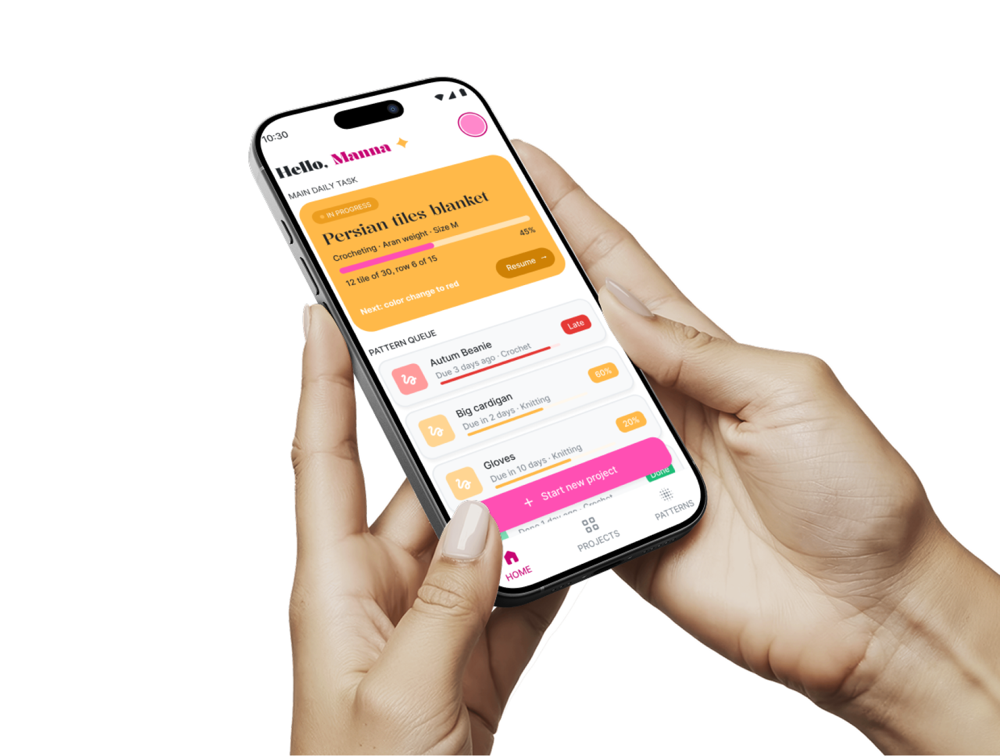
Case study · Ongoing hobby project
Stitch Please!
A mobile-first companion for crochet and knitting projects, from finding a pattern to the very last row.
Overview
One place for every row, stitch and colour change
Crafters (such as myself) juggle paper notes, bookmarked PDFs and their own memory to keep track of where they are in a project. Stitch Please! brings it all together: pattern storage, project progress and material planning in one place, built around the rhythm of how people actually craft.
It is for anyone who picks up a hook or needles, from someone crocheting their first beanie to an experienced knitter running five projects at once. Beginners get clear guidance through setup, experts get fast access to tracking and their pattern library.
- 4
- pillars: tracking, patterns, materials, sharing
- 3
- main sections: Home, Projects, Patterns
- 128
- variables in 4 collections, so light and dark switch with one mode
The process
I started from the craft itself: how people track their projects today and which apps already help. From there I defined the core problem and four pillars, built the information architecture and a design system, and designed the screens on top of it.
01 · Discover
- App concept
- Best-practice research
- Existing app review
02 · Define
- Core problem
- Four pillars
- Target users
03 · Develop
- Sitemap & IA
- User flows
- Variables & tokens
04 · Deliver
- Components
- Light & dark via modes
- Start new project flow
Discover
Starting from the craft
Before designing any screens, I looked at how crafters keep track of their work today, and at the apps they already use: row counters, chart makers and pattern libraries.
Research
Four steps from idea to pillars
- 01
App concept
Defining who the app is for and what it should do, from the first pattern to the finished piece.
- 02
Best practices
Collecting counters, chart tools and pattern apps on one board to see what works.
- 03
Finding the gaps
Projects, patterns and yarn live in separate tools, so crafters keep switching.
- 04
Four pillars
Turning the findings into four focus areas for the app.
Best practices
What existing craft apps do well
Counter apps make tapping fast and visible, and chart makers show patterns as clear grids. But most of them do only one thing, so crafters still jump between several tools.
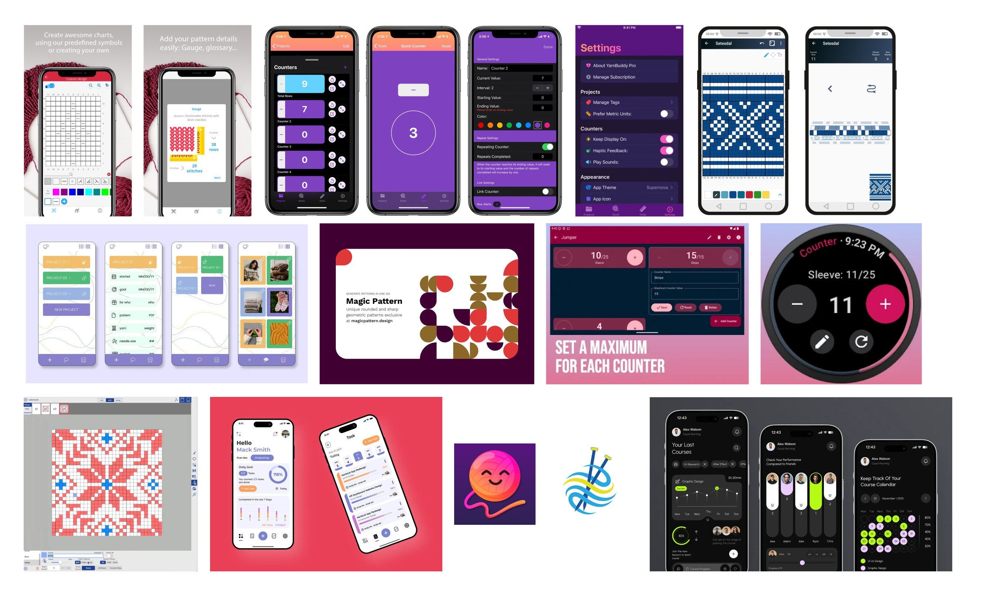
Key insight
Crafters don't need another social feed. They need one place that remembers exactly where they are.
Define
From scattered notes to one companion
The research pointed to one core problem and four areas the app has to cover. Everything else, including sharing, stays deliberately light.
Problem
Crafters juggle paper notes, bookmarked PDFs and memory to know where they are in a project.
Patterns, progress and materials live in different places, so every session starts with finding your place again.
Rebrief
“How might we help crafters go from a pattern to a finished project in one app, tracking every row, stitch and colour change along the way?”
The four pillars
Four pillars, one for each part of a project
01
Project tracking
The heart of the app: a tap counter for rows, tiles and rounds, colour-change alerts, notes and photos.
02
Pattern management
A personal library: import PDFs, paste URLs (e.g. Ravelry) or write patterns from scratch.
03
Material planning
Scoped to the project: the app tells you how much yarn this piece needs. No stash management.
04
Light sharing
Export a project or pattern as a link or image. No social feed, just simple sharing.
Develop
Structure first, then a system
I mapped the sitemap and the main user flows before drawing screens, then built a design system with Figma variables and design tokens so every screen could be assembled from the same parts, in light and dark mode.
Information architecture
Home, Projects and Patterns sit in the bottom navigation. Each one opens into its own detail screens, and a new project can start from Home or straight from a saved pattern.
- Home / dashboard
- New projectbasics & materials
- Import or create patternpreview, materials, sizes
- Project createdsummary, then back to Projects
- Projects
- Project detailprogress at a glance
- Log progressrows, notes, photos
- Summary & donetoday's progress, archive
- Patterns
- Pattern detailmaterials, sizes, stitch chart
- Start project from pattern
User flows
Two flows that carry the app
Starting a project is broken into short, focused steps. Daily tracking is built for speed: resume from Home, log rows, save, and come back tomorrow.
Start new project
- Home
- New project
- Craft type
- Materials
- Schedule
- Notes & summary
- Project created
Daily tracking
- Home
- Resume project
- Log rows & colours
- Save for today
- Summary
- Mark as done
- Archive
Design system
One system, light and dark
Colours, type, spacing, roundings and icons are set up as variables and tokens. Pink carries actions, orange marks what is in progress, and the neutrals switch between the light and dark themes.
Colour
- Primary · pink
- Primary · orange
- Neutral
- Success
- Danger
Typography
Aa Kalnia
Headings · title font token (text/font-family/title)Aa Inter
Body · body font token (text/font-family/body)Variables & tokens
I set up 128 variables in four collections. Primitive tokens hold the raw values. Semantic tokens give them a job, like text/primary or action/primary, and they have modes: Light and Dark for colour, Mobile and Desktop for type. Components only use semantic tokens, so switching a mode restyles every screen.
Primitive (global)
68 raw values
Colour ramps: pink, yellow, neutral, green, red
Spacing 2–32 px
Rounding 2–24 px
Font family, weight, size, line height
Semantic colours (alias)
31 colour roles
Background, Surface, Text, Border, Status, Action, State, Shadow
Semantic typography
28 type tokens
H1–H3, Lead, Base, Small, Caption: family, weight, size, line height
Components
Bound to semantic tokens
Buttons with active, pressed and inactive states, project cards, row counter, inputs, bottom navigation
Screens
Switch by mode
Set a frame to Light or Dark (or Mobile or Desktop) and every token resolves to its new value.
color/pink/500 #FF4FB3
Color/action/primary
“Start new project” button
In Dark mode the same role points to color/pink/300.
Semantic colours
Each colour role has a Light and a Dark value that points back to a primitive. This is what lets the app switch between light and dark mode without a second set of screens.
| Semantic token | Light mode | Dark mode |
|---|---|---|
| Color/Background/default | color/neutral/0 | color/neutral/1000 |
| Color/Surface/default | color/neutral/100 | color/neutral/800 |
| Color/text/primary | color/neutral/900 | color/neutral/0 |
| Color/text/primary 2 | color/pink/600 | color/pink/100 |
| Color/text/secondary | color/neutral/600 | color/neutral/200 |
| Color/border/default | color/neutral/200 | color/neutral/700 |
| Color/action/primary | color/pink/500 | color/pink/300 |
| Color/action/secondary | color/yellow/300 | color/yellow/600 |
| Color/status/success | color/green/500 | color/green/300 |
| Color/status/error | color/red/500 | color/red/300 |
Scales
Spacing, rounding and type, all as tokens
Spacing and corner radius come from fixed number scales, and the text styles read their size and line height from the Semantic Typography collection, which has a Mobile and a Desktop mode.
Spacing
Rounding
- 100 · 2px
- 200 · 4px
- 300 · 8px
- 400 · 16px
- 500 · 24px
Typography modes
| TOKEN | MOBILE | DESKTOP |
|---|---|---|
| H1 · Kalnia Bold | 32 / 40 | 40 / 48 |
| H2 · Kalnia Bold | 24 / 32 | 32 / 40 |
| H3 · Kalnia | 20 / 28 | 24 / 32 |
| Lead · Inter Medium | 18 / 28 | 24 / 32 |
| Base · Inter Medium | 16 / 24 | 16 / 24 |
| Small · Inter Medium | 14 / 20 | 14 / 20 |
| Caption · Inter Medium | 12 / 16 | 12 / 16 |
Prototype logic
A variable that really counts rows
A separate Conditions collection holds one number variable, currentRow. The + and − buttons of the row counter use Set variable actions, and the counter text is bound to the variable, so in the prototype the number actually goes up and down.
On tap + → set currentRow = currentRow + 1
On tap − → set currentRow = currentRow − 1
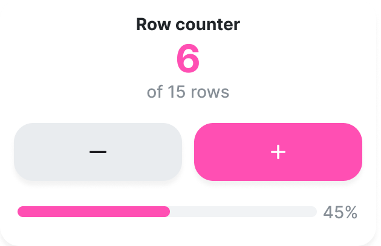
Components
Every component is a variant set with its states built in: active, pressed and disabled buttons; late, in-progress and done projects; default and chosen options. Their colours come from semantic tokens, so the same components work in light and dark mode.
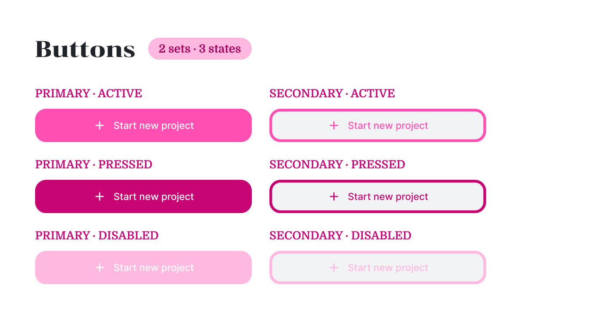
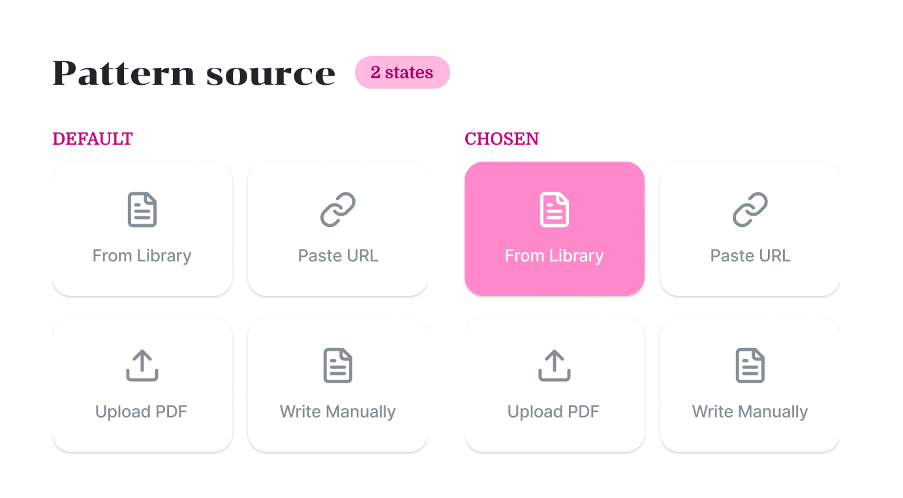
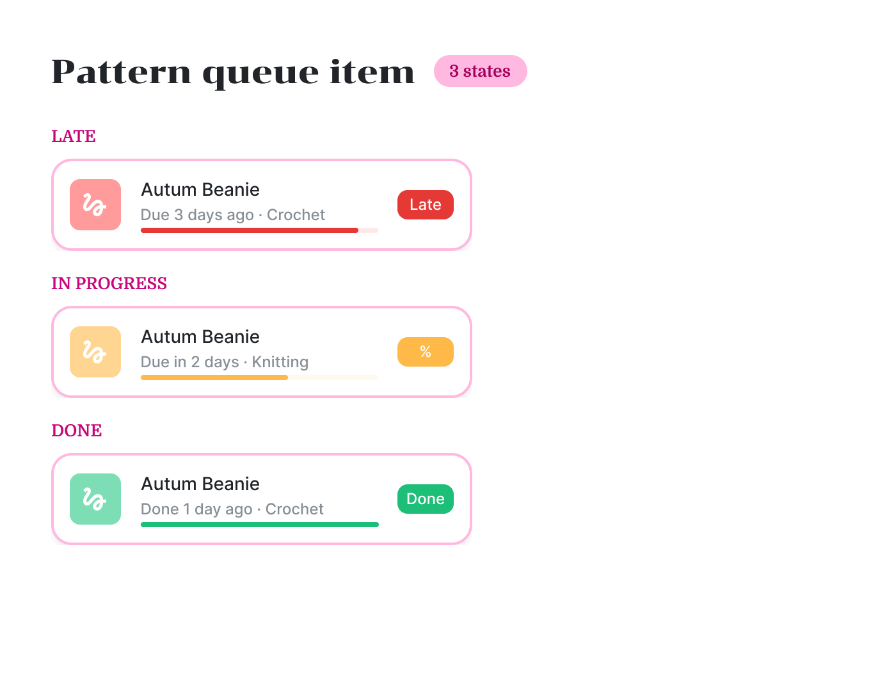
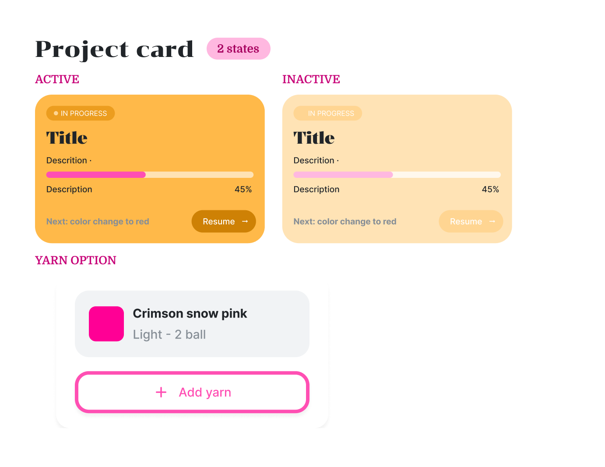
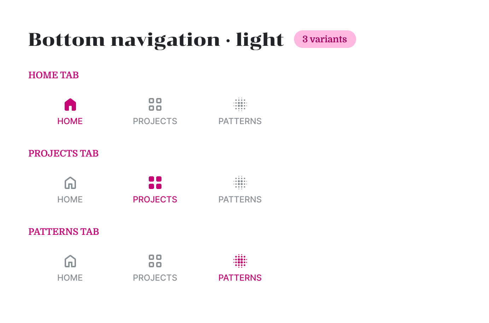
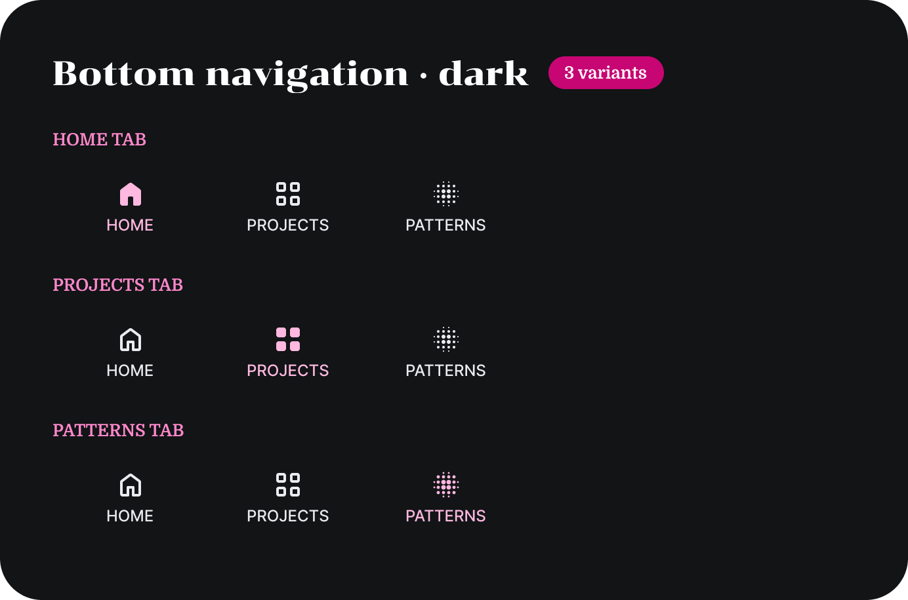
Deliver
A calm companion for busy hands
The final screens put the current project first and keep every action one tap away, so crafters can put the phone down mid-row and pick up exactly where they stopped.
Main screens
Dashboard, Projects, Patterns
The three tabs of the bottom navigation. Each opens on what matters most: today’s task, projects grouped by status, and a searchable pattern library.
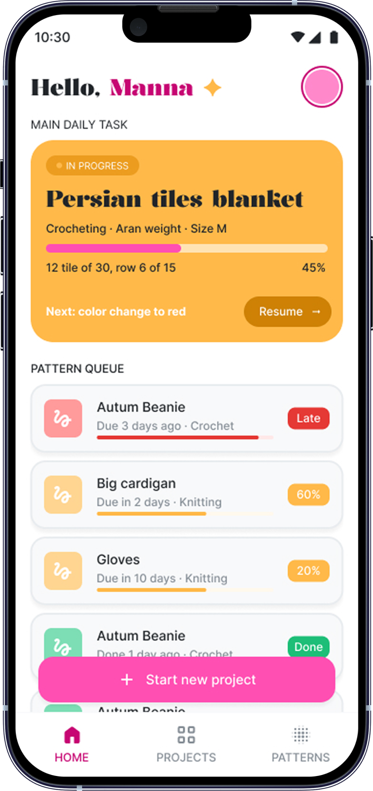
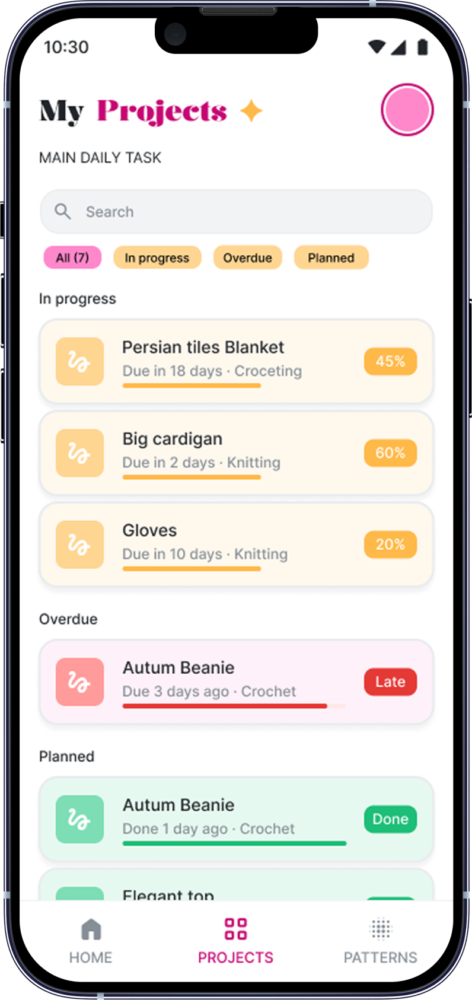
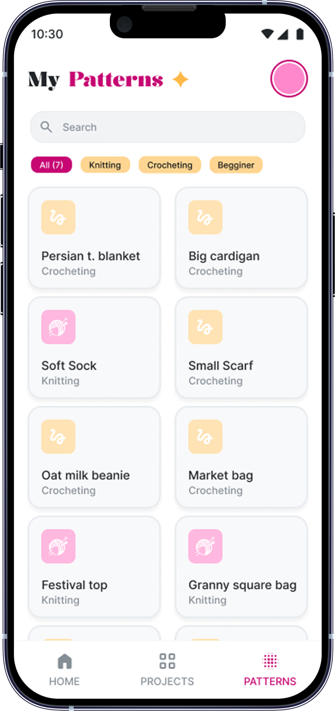
Home dashboard
Today’s task comes first
The home screen opens on the main daily task: the project in progress, how far along it is and the next colour change. Below it, the pattern queue shows what is next, with late, in-progress and finished projects marked by colour.
Bottom navigation
Three tabs, always within reach
Home, Projects and Patterns stay at the bottom of every screen, and the pink “Start new project” button floats above the list, so the main action is always under the thumb.
Start new project flow
Six short steps instead of one long form
Name the project and choose a pattern source, pick the craft type, add hook size and yarn, set an optional deadline and notes, then check the summary before the project is created.
- 1 · Name & pattern source
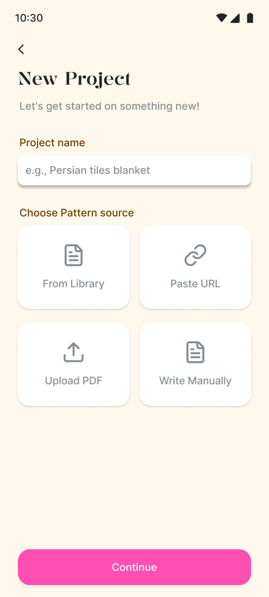
- 2 · Craft type
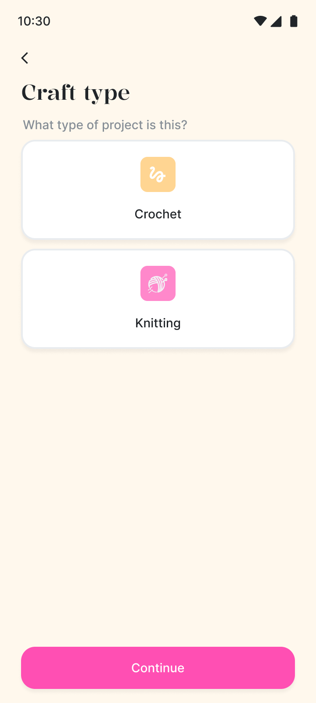
- 3 · Hook & materials
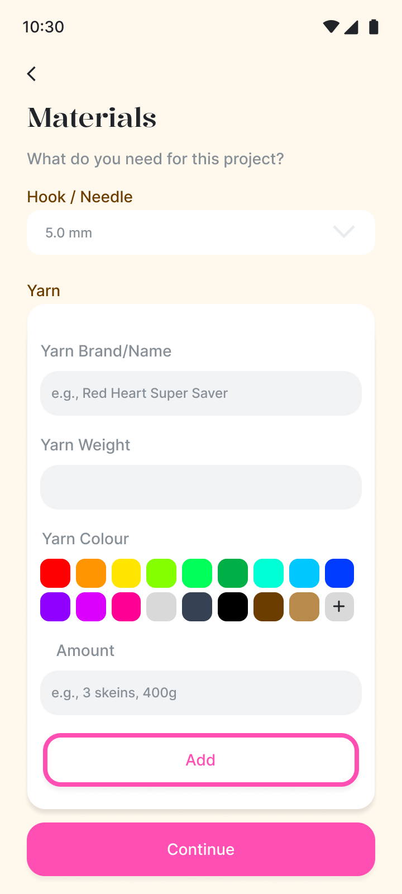
- 4 · Yarn added
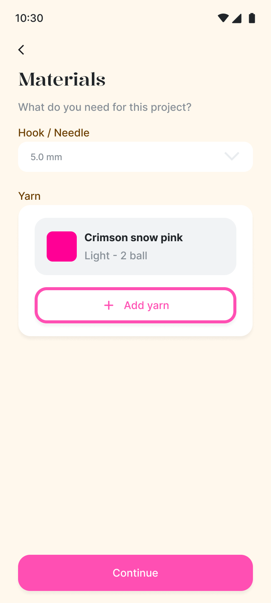
- 5 · Schedule
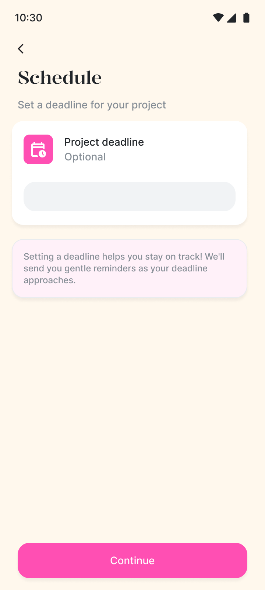
- 6 · Notes & summary
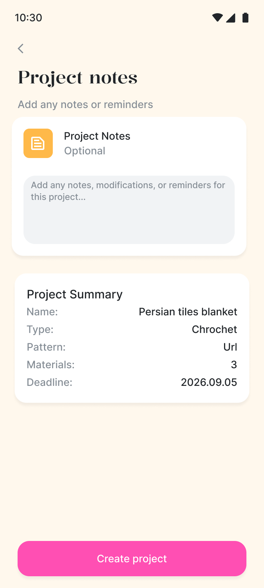
Light & dark mode
One design, switched by variables
Light and dark mode were built with variables and tokens, so the app can switch between them. Every colour is a semantic token with a Light and a Dark value: both sides below are the same frames, only the variable mode is different.
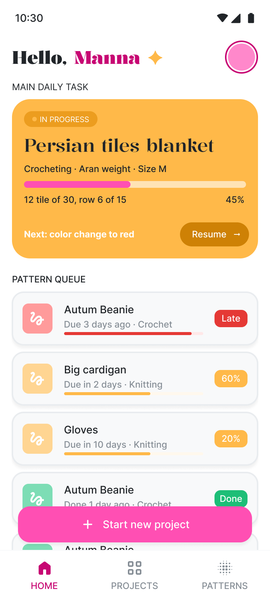
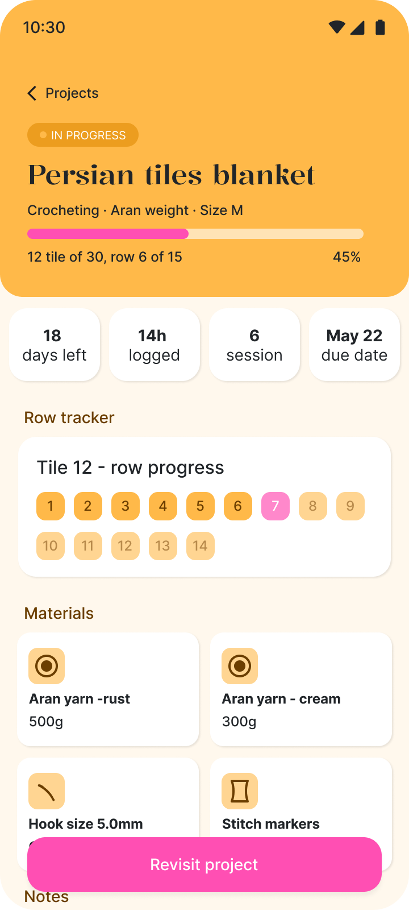
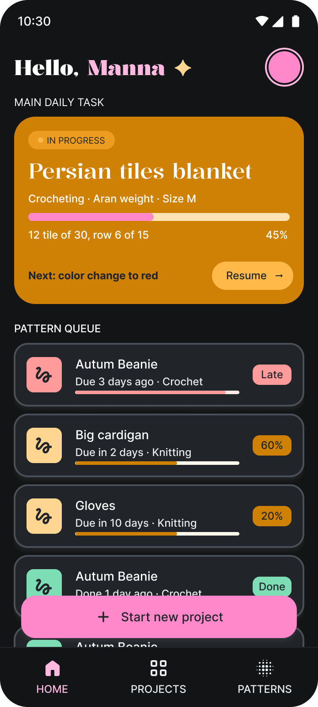
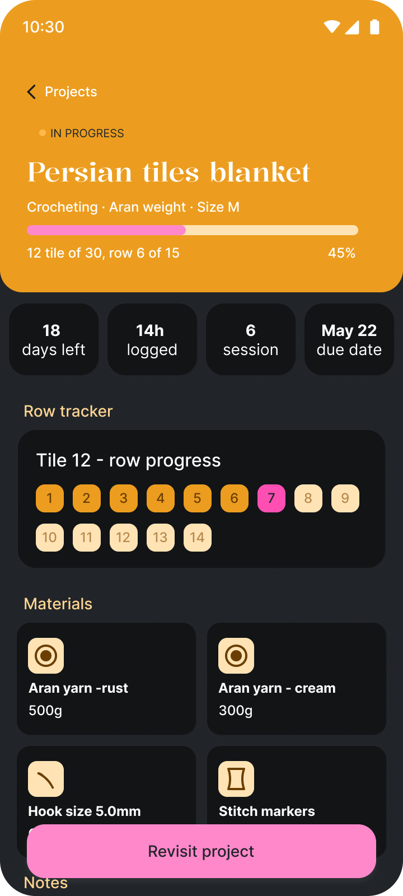
Reflection
What I learned
- A design system pays off fast: once colours, type and components were variables, the dark theme took a fraction of the time.
- Breaking a long setup into short steps makes it feel lighter, even when it asks for the same information.
- Crafting is full of interruptions, so the app has to show people exactly where they stopped, instantly.
This is an ongoing project
Stitch Please! started last semester and I keep working on it as a hobby project. The next step is testing the prototype with crafters, then iterating on the design based on what I learn.
Stitch Please!